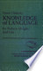
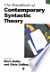
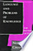

Web
Images
Videos
Maps
News
Shopping
Gmail
more
▼
Books
Finance
Translate
Scholar
Blogs
Realtime
YouTube
Calendar
Photos
Documents
Reader
Sites
Groups
even more »
mrshahman@gmail.com
|
My library
|
Help
|
My Account
|
Sign out
Advanced Book Search
Knowledge of language: its nature, origin, and use
By Noam Chomsky

3 Reviews
Write review
About this book
Add to My Library
▼
Google eBook
New!
This edition is available as an eBook.
Learn more
$83.16
$103.95
Better for larger screens.
Only scanned pages are available for this eBook, and they can be difficult to read on smaller screens. View a sample before buying.
Learn more
Buy now
View sample
Terms of Service
Get this book
Greenwood Publishing Group
Amazon.com
Barnes&Noble.com
Books-A-Million
Find in a library
All sellers »
Related books


All related books »
Pages displayed by permission of
Greenwood Publishing Group
.
Copyright
.
Page xi